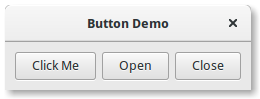
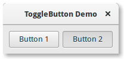
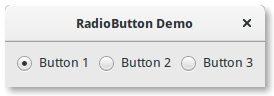
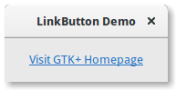
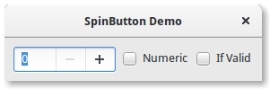
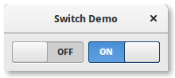

8. Widgets de Botão¶
8.1. Botão¶
O widget Button é outro widget comumente usado. Geralmente é usado para anexar uma função que é chamada quando o botão é pressionado.
O widget Gtk.Button pode conter qualquer widget filho válido. Isto é, ele pode conter praticamente qualquer outro padrão Gtk.Widget. Um filho mais comumente usado é a Gtk.Label.
Normalmente, você quer se conectar ao sinal “clicado” do botão que é emitido quando o botão foi pressionado e liberado.
8.1.1. Exemplo¶
1 2 3 4 5 6 7 8 9 10 11 12 13 14 15 16 17 18 19 20 21 22 23 24 25 26 27 28 29 30 31 32 33 34 35 36 37 38 39 | import gi
gi.require_version('Gtk', '3.0')
from gi.repository import Gtk
class ButtonWindow(Gtk.Window):
def __init__(self):
Gtk.Window.__init__(self, title="Button Demo")
self.set_border_width(10)
hbox = Gtk.Box(spacing=6)
self.add(hbox)
button = Gtk.Button.new_with_label("Click Me")
button.connect("clicked", self.on_click_me_clicked)
hbox.pack_start(button, True, True, 0)
button = Gtk.Button.new_with_mnemonic("_Open")
button.connect("clicked", self.on_open_clicked)
hbox.pack_start(button, True, True, 0)
button = Gtk.Button.new_with_mnemonic("_Close")
button.connect("clicked", self.on_close_clicked)
hbox.pack_start(button, True, True, 0)
def on_click_me_clicked(self, button):
print("\"Click me\" button was clicked")
def on_open_clicked(self, button):
print("\"Open\" button was clicked")
def on_close_clicked(self, button):
print("Closing application")
Gtk.main_quit()
win = ButtonWindow()
win.connect("destroy", Gtk.main_quit)
win.show_all()
Gtk.main()
|
8.2. Botão de Alternância¶
A Gtk.ToggleButton é muito semelhante a um normal Gtk.Button, mas quando clicados eles permanecem ativados, ou pressionados, até serem clicados novamente. Quando o estado do botão é alterado, o sinal “toggled” (alternado) é emitido.
Para recuperar o estado da Gtk.ToggleButton, você pode usar o método Gtk.ToggleButton.get_active(). Isso retorna True se o botão estiver “inativo”. Você também pode definir o estado do botão de alternância, com Gtk.ToggleButton.set_active(). Observe que, se você fizer isso e o estado realmente mudar, isso fará com que o sinal “alternado” seja emitido.
8.2.1. Exemplo¶
1 2 3 4 5 6 7 8 9 10 11 12 13 14 15 16 17 18 19 20 21 22 23 24 25 26 27 28 29 30 31 32 33 | import gi
gi.require_version('Gtk', '3.0')
from gi.repository import Gtk
class ToggleButtonWindow(Gtk.Window):
def __init__(self):
Gtk.Window.__init__(self, title="ToggleButton Demo")
self.set_border_width(10)
hbox = Gtk.Box(spacing=6)
self.add(hbox)
button = Gtk.ToggleButton("Button 1")
button.connect("toggled", self.on_button_toggled, "1")
hbox.pack_start(button, True, True, 0)
button = Gtk.ToggleButton("B_utton 2", use_underline=True)
button.set_active(True)
button.connect("toggled", self.on_button_toggled, "2")
hbox.pack_start(button, True, True, 0)
def on_button_toggled(self, button, name):
if button.get_active():
state = "on"
else:
state = "off"
print("Button", name, "was turned", state)
win = ToggleButtonWindow()
win.connect("destroy", Gtk.main_quit)
win.show_all()
Gtk.main()
|
8.3. Botão de Seleção¶
Gtk.CheckButton herda de Gtk.ToggleButton. A única diferença real entre os dois é como Gtk.CheckButton é apresentado. A Gtk.CheckButton coloca um discreto Gtk.ToggleButton ao lado de um widget, (geralmente um Gtk.Label). O sinal “toggled”, Gtk.ToggleButton.set_active() e Gtk.ToggleButton.get_active() são herdados.
8.4. Botão de Radio¶
Como os checkboxes, os radio buttons também herdam de Gtk.ToggleButton, mas estes funcionam em grupos, e apenas um Gtk.RadioButton em um grupo pode ser selecionado a qualquer momento. Portanto, um Gtk.RadioButton é uma maneira de dar ao usuário uma escolha entre várias opções.
Botões de rádio podem ser criados com um dos métodos estáticos Gtk.RadioButton.new_from_widget(), Gtk.RadioButton.new_with_label_from_widget() ou Gtk.RadioButton.new_with_mnemonic_from_widget(). O primeiro botão de rádio de um grupo será criado passando o None como o argumento group. Nas chamadas subsequentes, o grupo ao qual você deseja adicionar esse botão deve ser passado como um argumento.
Quando executado pela primeira vez, o primeiro botão de rádio do grupo estará ativo. Isto pode ser alterado chamando Gtk.ToggleButton.set_active() com True como primeiro argumento.
Alterar o grupo de widgets Gtk.RadioButton após sua criação pode ser feito chamando Gtk.RadioButton.join_group().
8.4.1. Exemplo¶
1 2 3 4 5 6 7 8 9 10 11 12 13 14 15 16 17 18 19 20 21 22 23 24 25 26 27 28 29 30 31 32 33 34 35 36 37 38 | import gi
gi.require_version('Gtk', '3.0')
from gi.repository import Gtk
class RadioButtonWindow(Gtk.Window):
def __init__(self):
Gtk.Window.__init__(self, title="RadioButton Demo")
self.set_border_width(10)
hbox = Gtk.Box(spacing=6)
self.add(hbox)
button1 = Gtk.RadioButton.new_with_label_from_widget(None, "Button 1")
button1.connect("toggled", self.on_button_toggled, "1")
hbox.pack_start(button1, False, False, 0)
button2 = Gtk.RadioButton.new_from_widget(button1)
button2.set_label("Button 2")
button2.connect("toggled", self.on_button_toggled, "2")
hbox.pack_start(button2, False, False, 0)
button3 = Gtk.RadioButton.new_with_mnemonic_from_widget(button1,
"B_utton 3")
button3.connect("toggled", self.on_button_toggled, "3")
hbox.pack_start(button3, False, False, 0)
def on_button_toggled(self, button, name):
if button.get_active():
state = "on"
else:
state = "off"
print("Button", name, "was turned", state)
win = RadioButtonWindow()
win.connect("destroy", Gtk.main_quit)
win.show_all()
Gtk.main()
|
8.5. Botão Link¶
A Gtk.LinkButton é um Gtk.Button com um hiperlink, similar ao usado pelos navegadores da web, que aciona uma ação quando clicado. É útil mostrar links rápidos para recursos.
O URI ligado a um Gtk.LinkButton pode ser configurado especificamente usando Gtk.LinkButton.set_uri() e recuperado usando Gtk.LinkButton.get_uri().
8.5.1. Exemplo¶
1 2 3 4 5 6 7 8 9 10 11 12 13 14 15 16 17 | import gi
gi.require_version('Gtk', '3.0')
from gi.repository import Gtk
class LinkButtonWindow(Gtk.Window):
def __init__(self):
Gtk.Window.__init__(self, title="LinkButton Demo")
self.set_border_width(10)
button = Gtk.LinkButton("http://www.gtk.org", "Visit GTK+ Homepage")
self.add(button)
win = LinkButtonWindow()
win.connect("destroy", Gtk.main_quit)
win.show_all()
Gtk.main()
|
8.6. Botão Giratório¶
A Gtk.SpinButton é uma maneira ideal de permitir que o usuário defina o valor de algum atributo. Em vez de digitar diretamente um número em Gtk.Entry, Gtk.SpinButton permite que o usuário clique em uma das duas setas para incrementar ou decrementar o valor exibido. Um valor ainda pode ser digitado, com o bônus que pode ser verificado para garantir que esteja em um determinado intervalo. As propriedades principais de um Gtk.SpinButton são definidas através de Gtk.Adjustment.
Para alterar o valor que Gtk.SpinButton está mostrando, use Gtk.SpinButton.set_value(). O valor digitado pode ser um número inteiro ou float, dependendo de seus requisitos, use Gtk.SpinButton.get_value() ou Gtk.SpinButton.get_value_as_int(), respectivamente.
Quando você permite a exibição de valores flutuantes no botão de rotação, você pode querer ajustar o número de espaços decimais exibidos chamando Gtk.SpinButton.set_digits().
Por padrão, Gtk.SpinButton aceita dados textuais. Se você deseja limitar isso apenas a valores numéricos, chame Gtk.SpinButton.set_numeric() com True como argumento.
Também podemos ajustar a política de atualização de Gtk.SpinButton. Existem duas opções aqui; por padrão, o botão de rotação atualiza o valor mesmo se os dados inseridos forem inválidos. Alternativamente, podemos definir a política para apenas atualizar quando o valor inserido é válido chamando Gtk.SpinButton.set_update_policy().
8.6.1. Exemplo¶
1 2 3 4 5 6 7 8 9 10 11 12 13 14 15 16 17 18 19 20 21 22 23 24 25 26 27 28 29 30 31 32 33 34 35 36 37 38 39 40 | import gi
gi.require_version('Gtk', '3.0')
from gi.repository import Gtk
class SpinButtonWindow(Gtk.Window):
def __init__(self):
Gtk.Window.__init__(self, title="SpinButton Demo")
self.set_border_width(10)
hbox = Gtk.Box(spacing=6)
self.add(hbox)
adjustment = Gtk.Adjustment(0, 0, 100, 1, 10, 0)
self.spinbutton = Gtk.SpinButton()
self.spinbutton.set_adjustment(adjustment)
hbox.pack_start(self.spinbutton, False, False, 0)
check_numeric = Gtk.CheckButton("Numeric")
check_numeric.connect("toggled", self.on_numeric_toggled)
hbox.pack_start(check_numeric, False, False, 0)
check_ifvalid = Gtk.CheckButton("If Valid")
check_ifvalid.connect("toggled", self.on_ifvalid_toggled)
hbox.pack_start(check_ifvalid, False, False, 0)
def on_numeric_toggled(self, button):
self.spinbutton.set_numeric(button.get_active())
def on_ifvalid_toggled(self, button):
if button.get_active():
policy = Gtk.SpinButtonUpdatePolicy.IF_VALID
else:
policy = Gtk.SpinButtonUpdatePolicy.ALWAYS
self.spinbutton.set_update_policy(policy)
win = SpinButtonWindow()
win.connect("destroy", Gtk.main_quit)
win.show_all()
Gtk.main()
|
8.7. Interruptor¶
A Gtk.Switch é um widget que possui dois estados: ligado ou desligado. O usuário pode controlar qual estado deve estar ativo clicando na área vazia ou arrastando a alça.
Você não deve usar o sinal “activate” no Gtk.Switch que é um sinal de ação e emiti-lo faz com que o switch anime. As aplicações nunca devem se conectar a este sinal, mas use o sinal “notify::active”, veja o exemplo abaixo.
8.7.1. Exemplo¶
1 2 3 4 5 6 7 8 9 10 11 12 13 14 15 16 17 18 19 20 21 22 23 24 25 26 27 28 29 30 31 32 33 34 35 | import gi
gi.require_version('Gtk', '3.0')
from gi.repository import Gtk
class SwitcherWindow(Gtk.Window):
def __init__(self):
Gtk.Window.__init__(self, title="Switch Demo")
self.set_border_width(10)
hbox = Gtk.Box(spacing=6)
self.add(hbox)
switch = Gtk.Switch()
switch.connect("notify::active", self.on_switch_activated)
switch.set_active(False)
hbox.pack_start(switch, True, True, 0)
switch = Gtk.Switch()
switch.connect("notify::active", self.on_switch_activated)
switch.set_active(True)
hbox.pack_start(switch, True, True, 0)
def on_switch_activated(self, switch, gparam):
if switch.get_active():
state = "on"
else:
state = "off"
print("Switch was turned", state)
win = SwitcherWindow()
win.connect("destroy", Gtk.main_quit)
win.show_all()
Gtk.main()
|